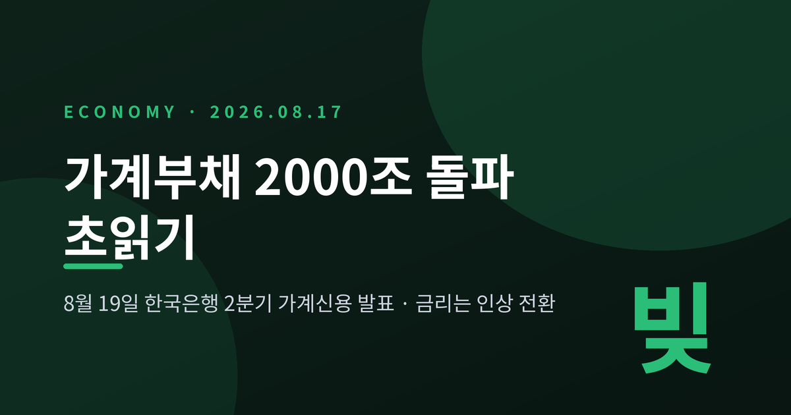
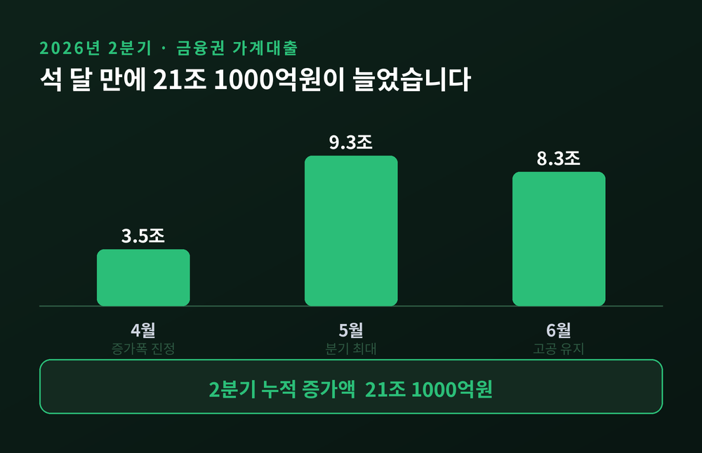
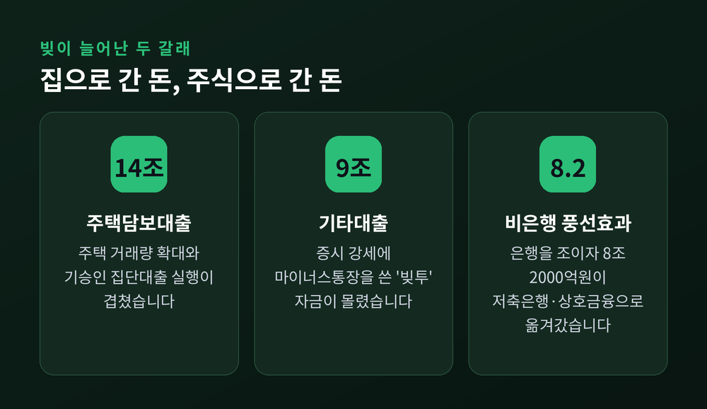
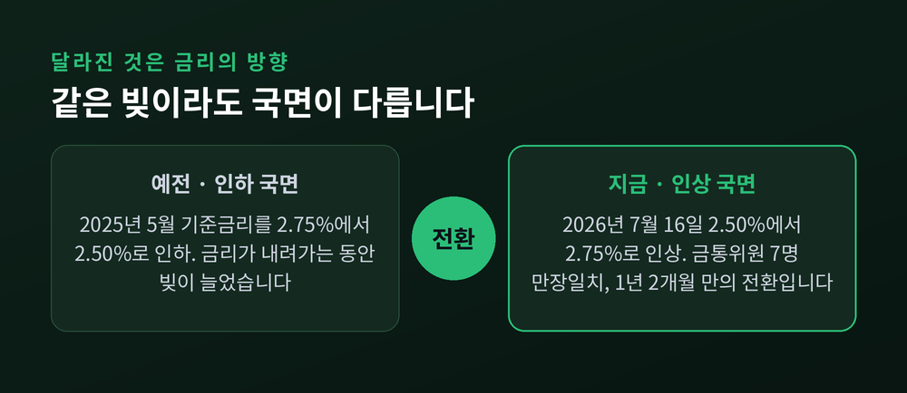
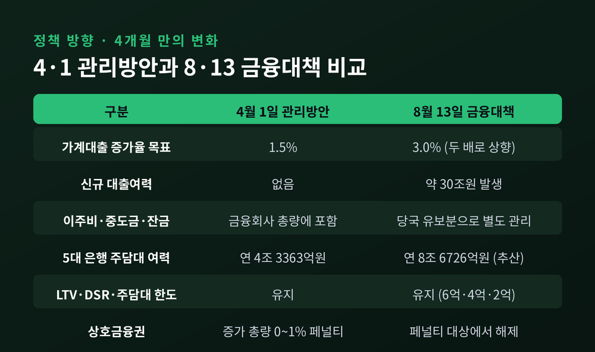
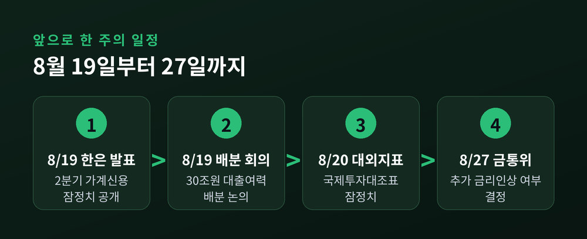

이번 글에서는 8월 19일 한국은행 발표를 앞두고 벌어지고 있는 가계부채 2000조 돌파 문제를 정리해 보겠습니다.
세 줄 요약
한국은행 경제통계1국이 8월 19일 수요일 정오에 '2026년 2/4분기 가계신용(잠정)'을 내놓습니다.
가계신용은 가계부채 규모를 보여주는 대표 지표입니다. 은행·보험·저축은행·상호금융에서 받은 가계대출에, 결제 전 신용카드 사용액 같은 판매신용을 더한 값입니다. 쉽게 말해 우리나라 가계가 지고 있는 빚의 총합입니다.
이 숫자가 사상 처음으로 2000조원을 넘어설 것이 확실시됩니다.
근거는 단순합니다. 올해 3월 말 가계신용 잔액이 이미 1993조 1000억원이었습니다. 역대 최대치였고, 전 분기보다 14조원(0.7%) 늘어난 결과였습니다. 2000조까지 남은 거리는 6조 9000억원에 불과했습니다.
그런데 2분기 들어 속도가 붙었습니다. 금융위원회 집계 기준으로 4월 3조 5000억원, 5월 9조 3000억원, 6월 8조 3000억원. 석 달 누적 증가액만 21조 1000억원입니다. 산술적으로 이미 2000조를 훌쩍 넘습니다.

2분기 증가를 이끈 것은 두 가지입니다.
첫째는 주택담보대출입니다. 2분기에만 14조원 늘었습니다. 주택 거래량이 늘었고, 앞서 승인된 집단대출의 실행이 이어졌습니다. 매달 4조~5조원대로 꾸준했습니다.
둘째는 신용대출을 포함한 기타대출입니다. 같은 기간 9조원 증가했습니다. 상반기 국내 증시가 강세를 이어가면서 마이너스통장 등을 끌어다 쓰는 이른바 '빚투' 자금이 대거 유입된 결과로 풀이됩니다.
집을 사려는 돈과 주식을 사려는 돈이 동시에 움직인 셈입니다.
1분기 통계를 보면 흐름이 더 선명합니다. 주택관련대출은 1178조 6000억원, 신용대출과 증권사 신용공여를 포함한 기타대출은 687조 2000억원이었습니다. 가계신용은 2024년 2분기 이후 여덟 개 분기 연속 늘었습니다.
한 가지 더 눈여겨볼 대목이 있습니다. 1분기에 은행권 가계대출은 오히려 2000억원 줄었습니다. 12분기 만의 감소였습니다. 반면 저축은행·상호금융·신협 같은 비은행권은 8조 2000억원 늘었습니다. 은행을 조이면 2금융권으로 옮겨가는 풍선효과가 그대로 나타난 것입니다.

빚이 많다는 사실만으로는 절반의 이야기입니다. 진짜 문제는 시점입니다.
한국은행 금융통화위원회는 지난달 16일 기준금리를 연 2.50%에서 2.75%로 0.25%포인트 올렸습니다. 금통위원 일곱 명 전원 찬성, 만장일치였습니다.
2025년 5월에 2.75%에서 2.50%로 내린 뒤 1년 2개월 만의 방향 전환입니다. 인상 자체로 보면 2023년 1월 이후 약 3년 6개월 만입니다.
예전에는 금리가 내려가는 국면에서 빚이 늘었습니다. 지금은 금리가 올라가는 국면에서 빚이 늘고 있습니다. 이 차이가 전부입니다.
신현송 한국은행 총재는 7월 기자간담회에서 "물가상승률이 목표 수준까지 안정적으로 수렴한다는 확신이 들 때까지 계속하겠다"고 말했습니다. 8월 추가 인상 여부에 대해서는 "모든 가능성을 열어두고 통화정책을 하겠다"며 여지를 남겼습니다.
기준금리 인상은 시차를 두고 대출금리에 반영됩니다. 변동금리 대출을 쓰는 차주부터 이자 부담이 커집니다. 주담대와 신용대출이 함께 늘어난 상황에서 금리까지 오르면, 원리금 상환 부담이 소비 여력을 갉아먹습니다. 전문가들이 내수 회복의 발목을 걱정하는 이유입니다.

균형을 위해 반대편 숫자도 보겠습니다.
한국은행이 6월에 낸 『금융안정보고서』를 보면 가계대출 연체율은 1.00%로 장기 평균을 밑돕니다. 전체 건전성은 아직 관리 범위 안에 있다는 뜻입니다.
문제는 평균 뒤에 가려진 부분입니다. 같은 보고서에서 대출금액 기준 취약차주 비중은 4.9%에서 5.2%로 올라갔습니다. 상환 능력이 부족한 쪽이 먼저, 그리고 더 크게 흔들린다는 신호입니다.
국제 비교도 참고할 만합니다. 1분기 GDP 대비 가계부채 비율은 85.3%로 전 분기 88.1%보다 2.9%포인트 낮아졌습니다. 다만 이는 빚이 줄어서가 아니라 명목 GDP가 커진 영향이라는 반론이 함께 나옵니다. 국제결제은행 통계 기준으로 한국은 OECD 31개국 가운데 여섯 번째로 높습니다. 스위스, 호주, 캐나다, 네덜란드, 뉴질랜드 다음입니다.
여기서부터가 이번 사안의 진짜 쟁점입니다.
금융위원회는 지난 4월 1일 '2026년도 가계부채 관리방안'을 내놨습니다. 표어는 "부동산 시장과 금융의 절연"이었습니다. 올해 가계대출 증가율 목표를 1.5%로 묶었습니다. 경상성장률 전망치의 절반도 안 되는 수준이니, 사실상 강한 총량 규제였습니다. 2030년까지 GDP 대비 가계부채 비율을 80% 아래로 낮추겠다는 로드맵도 함께 제시했습니다.
그런데 8월 13일, 이억원 금융위원장이 부동산 금융 종합대책을 발표하면서 이 목표가 3.0%로 올라갔습니다. 넉 달 만에 두 배입니다.
목표가 늘면서 신규 대출여력 약 30조원이 생겼습니다. 이주비·중도금·잔금대출은 금융회사별 총량이 아니라 당국의 유보분에서 차감하도록 분류를 바꿨습니다. 금융사 입장에서는 취급 부담이 줄어듭니다. 5대 은행의 주담대 여력은 약 7조 5000억원 늘어날 것으로 추산됩니다. 지난해 관리 실패로 페널티를 받았던 새마을금고 등 상호금융업권도 이번에 포함됐습니다.
다만 LTV와 DSR, 그리고 6억·4억·2억원의 주담대 한도는 그대로 유지됩니다. 지방 주택담보대출에 대한 스트레스 DSR 3단계 적용은 또 한 차례 유예돼 상반기까지 2단계가 이어집니다.

당국의 논리는 이렇습니다. 최근의 대출난은 은행들이 스스로 한도를 줄인 데서 비롯됐고, 이주비·중도금·잔금 같은 실수요 자금까지 막히면 주택 공급 일정이 밀린다는 것입니다. '대출 오픈런'까지 벌어졌던 갈아타기 실수요자의 사정도 고려했다고 합니다.
반대편의 걱정은 타이밍에 있습니다. 가계부채가 2000조원을 넘는 바로 그 시점에 총량 목표를 두 배로 늘리는 선택이 맞느냐는 물음입니다. 금리 인상기와 겹치면 취약차주 부실이 커지고 금융권 건전성 관리에도 부담이 됩니다. 집값을 다시 자극할 수 있다는 지적도 나옵니다.
이해관계도 갈립니다. 한국은행은 물가를 봐야 하고, 금융위원회는 주택 공급과 실수요를 봐야 합니다. 은행은 영업 여력이 늘어 반갑지만 건전성 부담도 함께 집니다. 상호금융은 다시 문을 열 수 있게 됐으나, 풍선효과의 종착지가 될 위험을 안습니다. 그리고 차주는 두 갈래로 나뉩니다. 실수요자는 대출길이 넓어지고, 변동금리 취약차주는 이자가 무거워집니다.
공교롭게도 같은 날입니다. 빚의 총량을 확인하는 발표와, 빚을 더 낼 수 있게 나누는 회의가 8월 19일에 나란히 열립니다.

정리하면 이렇습니다.
가계부채는 사상 처음 2000조원 선을 넘습니다. 늘어난 이유는 주택담보대출과 '빚투'이고, 위험한 이유는 금리가 오르는 국면이라는 점입니다. 정책은 실수요를 살리는 쪽으로 방향을 틀었지만, 그만큼 부담도 함께 커졌습니다.
8월 19일 발표된 숫자를 보고도 마음이 놓이겠느냐고 물으신다면, 저는 그 다음 주 27일 금통위까지 지켜봐야 한다고 답하겠습니다.
이 글은 공개된 통계와 언론 보도를 바탕으로 정리한 정보 제공용 콘텐츠이며, 특정 금융상품이나 종목에 대한 투자 권유가 아닙니다. 대출·투자 판단과 그 결과에 대한 책임은 본인에게 있습니다. 2분기 가계신용 확정치는 8월 19일 한국은행 발표로 확인하시기 바랍니다.